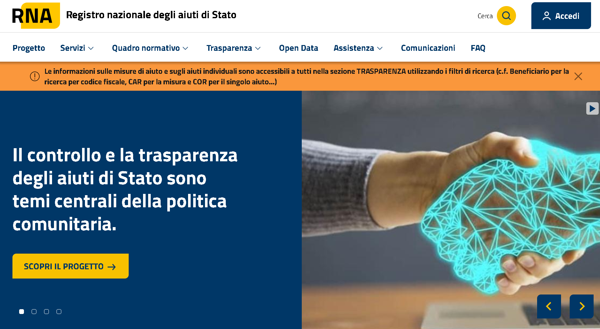
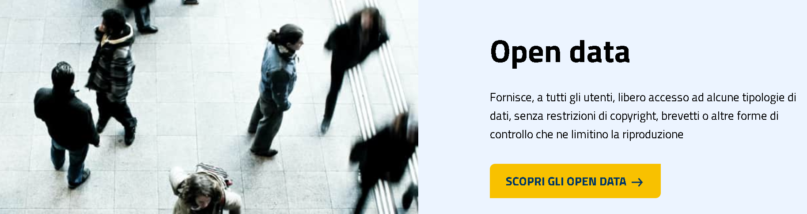

df = con.execute("SELECT * FROM 'OpenData_Aiuti_2025_01.parquet'").df()
df.shape(4520, 21)trasparenza e controllo sugli aiuti pubblici concessi in conformità alla normativa europea sugli aiuti di Stato
Paolo Volterra
Il Registro Nazionale degli Aiuti di Stato #RNA è uno strumento gestito dal Ministero delle Imprese e del Made in Italy (ex Ministero dello Sviluppo Economico - MiSE), che permette di raccogliere, monitorare e pubblicare informazioni relative agli aiuti di Stato concessi alle imprese e agli enti in Italia.

Il #RNA è stato realizzato come parte di un’importante azione di sistema cofinanziata dall’Unione Europea. In particolare, il progetto ha beneficiato di risorse pari a 17.715.920,01 euro, assegnate nell’ambito del Programma Operativo Complementare al PON Governance e Capacità Istituzionale 2014-2020.
La progettazione e la realizzazione di una prima versione prototipale del Registro sono state completate nel 2016, con un investimento di 2.652.236,00 euro.
Il #RNA è operativo dal 12 agosto 2017 e rappresenta uno strumento fondamentale per garantire la trasparenza e il controllo degli aiuti di Stato concessi in Italia.
Il #RNA include informazioni come: - Identità del beneficiario (nome, partita IVA, codice fiscale). - Tipo di aiuto concesso (contributo a fondo perduto, credito d’imposta, agevolazione fiscale, ecc.). - Importo e intensità dell’aiuto. - Riferimenti alla normativa e al regime di aiuti in base al quale è stato concesso. - Ente erogatore.
Il #RNA è disciplinato dal Decreto Legge n. 123/2017, che stabilisce obblighi per le amministrazioni pubbliche e i soggetti che gestiscono misure di aiuto. L’obiettivo è garantire che tutti gli aiuti siano comunicati e registrati.
Il #RNA è consultabile tramite una piattaforma online, accessibile sia dagli enti pubblici che dagli operatori economici.
Alcune informazioni, per motivi di riservatezza, potrebbero essere soggette a limitazioni.
Il #RNA permette di verificare se un’impresa ha superato la soglia prevista dal regime “de minimis” (200.000 euro nell’arco di tre esercizi finanziari, salvo eccezioni per alcuni settori).
Oltre all’interrogazione online, #RNA permette il download degli #opendata

#RNA aggiorna costantemente il propsio DB conn le segnalazioni dovute dai mittenti normativamente previsti.
Le date degli opendata XML messi a disposizione corrispondono al mese della variabile “DATA_CONCESSIONE” contenuta in ognuno di loro
RNA riceve però anche informazioni datate e quindi aggiorna tutto.
Potenzialmente, quindi, tutti gli XML andrebbero riscaricati …
Di seguito, ad esempio, gli ultimi 3 file parquet del 2024 da me realizzati, la data di mia aggiornamento e i df.shape
Appresso riporto alcune sintesi dell’ultimo XML -> parquet da me prodotto
df = con.execute("SELECT upper(misura) MISURA, count(CAR) CONCESSIONI, \
sum(cast(NOMINALE as integer)) NOMINALE, sum(cast(AIUTO as integer)) AIUTI \
FROM 'OpenData_Aiuti_2025_01.parquet' group by 1 order by 2 desc limit 10").df()
df| MISURA | CONCESSIONI | NOMINALE | AIUTI | |
|---|---|---|---|---|
| 0 | FONDO DI GARANZIA PER LE PICCOLE E MEDIE IMPRESE | 1968 | 255,839,016.0 | 16,826,417.0 |
| 1 | REGOLAMENTO PER I FONDI INTERPROFESSIONALI PER LA FORMAZIONE CONTINUA PER LA CONCESSIONI DI AIUTI DI STATO ESENTATI AI SENSI DEL REGOLAMENTO CE N.651/2014 E IN REGIME DE MINIMIS AI SENSI DEL REGOLAMENTO CE N.1407/2013 | 1562 | 5,649,132.0 | 5,484,626.0 |
| 2 | BANDO VOUCHER TRANSIZIONE DIGITALE ED ECOLOGICA E PER SISTEMI DI SICUREZZA 2024 | 97 | 586,960.0 | 586,960.0 |
| 3 | PNRR, M1C3 INVESTIMENTI 4.2.1; 4.2.2 AVVISO PUBBLICO EX ARTT. 1 E 4 DL 152/2021 | 79 | 5,176,411.0 | 4,636,411.0 |
| 4 | CREDITO D'ESERCIZIO | 74 | 1,659,000.0 | 68,097.0 |
| 5 | BANDO PER CONTRIBUTI PER LA TRANSIZIONE DIGITALE ED ECOLOGICA DELLE IMPRESE ANNO 2024-2025 | 37 | 138,827.0 | 138,827.0 |
| 6 | INVESTIMENTI SOSTENIBILI 4.0 (PN RIC 2021-2027) | 36 | 30,234,444.0 | 19,391,190.0 |
| 7 | PI ARTIGIANATO | 35 | 500,507.0 | 538,507.0 |
| 8 | COVID-19: FONDO DI GARANZIA PMI - MODIFICA SA.56966, SA.57625, SA.59655 | 30 | 94,030.0 | 94,030.0 |
| 9 | APPROVAZIONE AVVISO BANDO DOTE IMPRESA COLLOCAMENTO MIRATO - FONDO 2022 | 28 | 244,546.0 | 244,546.0 |
df = con.execute("SELECT upper(concedente) CONCEDENTE, count(CAR) CONCESSIONI, \
sum(cast(NOMINALE as integer)) NOMINALE, sum(cast(AIUTO as integer)) AIUTI \
FROM 'OpenData_Aiuti_2025_01.parquet' group by 1 order by 2 desc limit 10").df()
df| CONCEDENTE | CONCESSIONI | NOMINALE | AIUTI | |
|---|---|---|---|---|
| 0 | BANCA DEL MEZZOGIORNO MEDIOCREDITO CENTRALE S.P.A. | 1998 | 255,933,046.0 | 16,920,447.0 |
| 1 | FONDER | 881 | 1,520,065.0 | 1,427,843.0 |
| 2 | FONARCOM | 219 | 384,867.0 | 384,867.0 |
| 3 | FONDO FOR.TE | 156 | 879,118.0 | 879,118.0 |
| 4 | REGIONE SICILIANA - DIPARTIMENTO ATTIVITA' PRODUTTIVE | 111 | 2,684,025.0 | 871,858.0 |
| 5 | FONDIMPRESA | 103 | 2,044,845.0 | 2,044,845.0 |
| 6 | FONDO ARTIGIANATO FORMAZIONE | 102 | 693,014.0 | 622,305.0 |
| 7 | CAMERA DI COMMERCIO, INDUSTRIA, ARTIGIANATO E AGRICOLTURA DELLA TOSCANA NORD OVEST | 97 | 586,960.0 | 586,960.0 |
| 8 | AGENZIA NAZIONALE PER L'ATTRAZIONE DEGLI INVESTIMENTI E LO SVILUPPO D'IMPRESA SPA - INVITALIA (05678721001) | 81 | 5,584,086.0 | 4,808,253.0 |
| 9 | INVITALIA - AGENZIA NAZIONALE PER L'ATTRAZIONE DEGLI INVESTIMENTI E LO SVILUPPO D'IMPRESA S.P.A. | 71 | 34,794,624.0 | 23,580,585.0 |
df = con.execute("SELECT upper(concedente) CONCEDENTE, count(CAR) CONCESSIONI, \
sum(cast(NOMINALE as integer)) NOMINALE, sum(cast(AIUTO as integer)) AIUTI \
FROM 'OpenData_Aiuti_2025_01.parquet' group by 1 order by 3 desc limit 10").df()
df| CONCEDENTE | CONCESSIONI | NOMINALE | AIUTI | |
|---|---|---|---|---|
| 0 | BANCA DEL MEZZOGIORNO MEDIOCREDITO CENTRALE S.P.A. | 1998 | 255,933,046.0 | 16,920,447.0 |
| 1 | GSE - GESTORE SERVIZI ENERGETICI S.P.A. | 10 | 43,488,060.0 | 24,501,008.0 |
| 2 | INVITALIA - AGENZIA NAZIONALE PER L'ATTRAZIONE DEGLI INVESTIMENTI E LO SVILUPPO D'IMPRESA S.P.A. | 71 | 34,794,624.0 | 23,580,585.0 |
| 3 | MINISTERO DELLE IMPRESE E DEL MADE IN ITALY - DIPARTIMENTO PER LE POLITICHE PER LE IMPRESE - DIREZIONE GENERALE PER GLI INCENTIVI ALLE IMPRESE | 43 | 19,699,510.0 | 14,552,950.0 |
| 4 | AGENZIA NAZIONALE PER L'ATTRAZIONE DEGLI INVESTIMENTI E LO SVILUPPO D'IMPRESA SPA - INVITALIA (05678721001) | 81 | 5,584,086.0 | 4,808,253.0 |
| 5 | GSE GESTORE SERVIZI ENERGETICI S.P.A. | 19 | 3,990,326.0 | 3,990,326.0 |
| 6 | INAIL - DIREZIONE CENTRALE PREVENZIONE | 33 | 2,783,035.0 | 2,121,624.0 |
| 7 | REGIONE SICILIANA - DIPARTIMENTO ATTIVITA' PRODUTTIVE | 111 | 2,684,025.0 | 871,858.0 |
| 8 | UNIVERSIT DEGLI STUDI DI NAPOLI FEDERICO II | 16 | 2,114,354.0 | 1,356,686.0 |
| 9 | FONDIMPRESA | 103 | 2,044,845.0 | 2,044,845.0 |
df = con.execute("SELECT CONCESSIONE, count(CAR) CONCESSIONI, \
sum(cast(NOMINALE as integer)) NOMINALE, sum(cast(AIUTO as integer)) AIUTI \
FROM 'OpenData_Aiuti_2025_01.parquet' \
group by 1 order by 1 desc").df()
df| CONCESSIONE | CONCESSIONI | NOMINALE | AIUTI | |
|---|---|---|---|---|
| 0 | 2025-01-10 | 1956 | 225,006,633.0 | 17,667,677.0 |
| 1 | 2025-01-09 | 1146 | 29,757,570.0 | 21,616,680.0 |
| 2 | 2025-01-08 | 297 | 13,854,520.0 | 11,472,341.0 |
| 3 | 2025-01-07 | 904 | 83,763,955.0 | 34,630,706.0 |
| 4 | 2025-01-06 | 5 | 50,002.0 | 50,002.0 |
| 5 | 2025-01-05 | 1 | 14,493.0 | 14,493.0 |
| 6 | 2025-01-04 | 3 | 6,220.0 | 6,220.0 |
| 7 | 2025-01-03 | 88 | 689,342.0 | 633,539.0 |
| 8 | 2025-01-02 | 120 | 38,997,416.0 | 22,144,828.0 |
df = con.execute("SELECT upper(misura) MISURA, count(CAR) CONCESSIONI, \
sum(cast(NOMINALE as integer)) NOMINALE, sum(cast(AIUTO as integer)) AIUTI \
FROM 'OpenData_Aiuti_2025_01.parquet' where concedente like '%INVI%' \
group by 1 order by 3 desc limit 10").df()
df| MISURA | CONCESSIONI | NOMINALE | AIUTI | |
|---|---|---|---|---|
| 0 | INVESTIMENTI SOSTENIBILI 4.0 (PN RIC 2021-2027) | 36 | 30,234,444.0 | 19,391,190.0 |
| 1 | PNRR, M1C3 INVESTIMENTI 4.2.1; 4.2.2 AVVISO PUBBLICO EX ARTT. 1 E 4 DL 152/2021 | 79 | 5,176,411.0 | 4,636,411.0 |
| 2 | FONDO PER IL SOSTEGNO ALLA TRANSIZIONE INDUSTRIALE | 4 | 3,131,066.0 | 3,131,066.0 |
| 3 | NIT0 - NUOVE IMPRESE A TASSO ZERO | 6 | 409,946.0 | 207,143.0 |
| 4 | 4:2:5 FONDO ROTATIVO IMPRESE (FRI) PER IL SOSTEGNO ALLE IMPRESE E GLI INVESTIMENTI DI SVILUPPO | 2 | 407,675.0 | 171,842.0 |
| 5 | RESTO AL SUD | 12 | 347,925.0 | 342,667.0 |
| 6 | SMART&START - RIORDINO DEGLI INTERVENTI DI SOSTEGNO ALLA NASCITA E ALLO SVILUPPO DI START-UP INNOVATIVE IN TUTTO IL TERRITORIO NAZIONALE - VERSIONE MODIFICATA DAL CODICE CE SA.55753 | 2 | 309,576.0 | 204,666.0 |
| 7 | INTERVENTO AGEVOLATIVO PER LA BREVETTAZIONE E LA VALORIZZAZIONE ECONOMICA DEI BREVETTI A FAVORE DI MICRO PICCOLE E MEDIE IMPRESE | 3 | 289,067.0 | 231,253.0 |
| 8 | FONDO A SOSTEGNO DELLE PICCOLE E MEDIE IMPRESE CREATIVE | 7 | 67,600.0 | 67,600.0 |
| 9 | AGEVOLAZIONI NEL CRATERE SISMICO AQUILANO MISURA II" PROGRAMMI DI INVESTIMENTO FINALIZZATI ALLA VALORIZZAZIONE E COMMERCIALIZZAZIONE DEI PRODOTTI DI ECCELLENZA DEL TERRITORIO" | 1 | 5,000.0 | 5,000.0 |
df = con.execute("SELECT CONCESSIONE, count(CAR) CONCESSIONI, \
sum(cast(NOMINALE as integer)) NOMINALE, sum(cast(AIUTO as integer)) AIUTI \
FROM 'OpenData_Aiuti_2025_01.parquet' where concedente like '%INVI%' \
group by 1 order by 1 desc").df()
df| CONCESSIONE | CONCESSIONI | NOMINALE | AIUTI | |
|---|---|---|---|---|
| 0 | 2025-01-10 | 20 | 631,420.0 | 495,439.0 |
| 1 | 2025-01-09 | 2 | 309,576.0 | 204,666.0 |
| 2 | 2025-01-08 | 14 | 4,021,859.0 | 3,656,132.0 |
| 3 | 2025-01-07 | 116 | 35,415,855.0 | 24,032,601.0 |